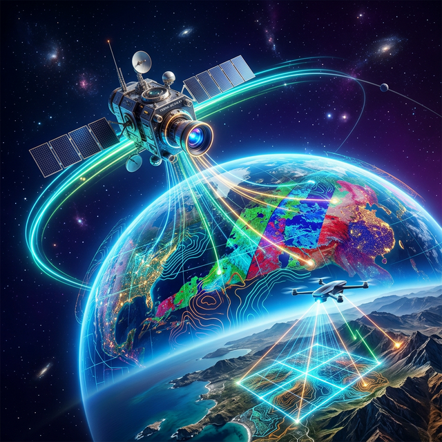

Your complete knowledge base for GIS, Remote Sensing, geospatial analysis, satellite imagery, drone data, code tools, and AI-powered answers — all in one place.

Understand the foundations and advanced concepts of geospatial science.
GIS is a framework for gathering, managing, and analyzing data rooted in geography. It integrates many types of data and uses geography as the common thread to visualize, question, analyze, and interpret data to understand relationships, patterns, and trends.
Remote sensing is the science of acquiring information about the Earth's surface without physical contact, typically through satellite or aircraft-mounted sensors that detect electromagnetic radiation.
Photogrammetry uses photographs to measure and interpret geographic features. Modern UAV/drone-based photogrammetry revolutionizes high-resolution 3D terrain modeling.
Spatial analysis turns raw data into actionable insights using mathematical and statistical methods on geographic features and their relationships.
Dozens of Earth observation satellites provide multispectral, hyperspectral, SAR, and thermal imagery for diverse geospatial applications.
Machine learning and deep learning are transforming geospatial analysis — automating feature extraction, image classification, and predictive modeling at scale.
Explore the professional tools, platforms, and languages used in geospatial work.
Free, open-source desktop GIS with powerful plugins for analysis, editing, and cartography. Cross-platform and community driven.
Industry-leading GIS platform by Esri. Advanced spatial analysis, 3D visualization, model builder, and enterprise integration.
Powerful open-source raster and vector analysis. Excellent for hydrology, terrain analysis, and scientific research.
Versatile GIS software supporting 300+ formats. Excellent for LiDAR analysis, terrain processing, and data conversion.
System for Automated Geoscientific Analyses — specialized in terrain analysis, climate modeling, and geostatistics.
CAD-based mapping solution by Autodesk for engineering and infrastructure GIS workflows.
Planetary-scale geospatial analysis platform with petabytes of satellite imagery. JavaScript & Python API for cloud-based processing.
Esri's cloud-based GIS platform for creating, sharing, and analyzing geospatial content with web apps and dashboards.
Cloud API for accessing and processing Copernicus/Sentinel satellite data. EO Browser for visualization.
Open API for Earth observation cloud backends — process data on multiple backends with a unified interface.
Cloud computing with geospatial services — S3 for COG storage, SageMaker for ML, STAC catalogs for data discovery.
Daily 3m global imagery from a constellation of SmallSats. Education and research access available.
The go-to language for geospatial scripting. GeoPandas for vector, Rasterio for raster, Shapely for geometry operations.
Web mapping libraries for interactive maps. Leaflet for simplicity, MapLibre GL JS for vector tiles and 3D terrain.
Statistical computing with powerful spatial packages. sf for vector, terra for raster, tmap for thematic mapping.
Access petabytes of geospatial data, perform server-side processing, and deploy web applications using EE API.
The foundational library for raster (GDAL) and vector (OGR) geospatial data translation and processing. Used by almost all GIS software.
Spatial database extension for PostgreSQL. Industry standard for storing and querying large geospatial datasets.
Industry-leading remote sensing image analysis software. Hyperspectral analysis, target detection, change detection, and IDL scripting.
Object-based image analysis (OBIA) software. Segment imagery into meaningful objects for advanced classification workflows.
Photogrammetry software for processing drone and aerial photos into 3D models, DEMs, and orthomosaics.
ESA's free toolbox for Sentinel satellite data processing — radiometric calibration, interferometry, polarimetry.
Tools for ocean color remote sensing — processing MODIS, SeaWiFS, and PACE ocean data.
LiDAR and point cloud processing tools. LAStools for high-performance processing, CloudCompare for 3D visualization.
Copy and run production-ready Python, JavaScript, and GEE scripts to accelerate your workflow.
import rasterio
import numpy as np
def calculate_ndvi(red_path, nir_path, output_path):
"""Calculate NDVI from Red and NIR bands."""
with rasterio.open(red_path) as red_ds:
red = red_ds.read(1).astype(float)
profile = red_ds.profile
with rasterio.open(nir_path) as nir_ds:
nir = nir_ds.read(1).astype(float)
# Avoid division by zero
np.seterr(divide='ignore', invalid='ignore')
ndvi = np.where(
(nir + red) == 0,
0,
(nir - red) / (nir + red)
)
profile.update(dtype=rasterio.float32, count=1, nodata=-9999)
with rasterio.open(output_path, 'w', **profile) as dst:
dst.write(ndvi.astype(rasterio.float32), 1)
print(f"NDVI saved to {output_path}")
print(f"Min: {ndvi.min():.4f}, Max: {ndvi.max():.4f}")
return ndvi
# Usage
ndvi = calculate_ndvi('red.tif', 'nir.tif', 'ndvi.tif')import os
import rasterio
from rasterio.warp import calculate_default_transform, reproject, Resampling
def batch_reproject(input_folder, output_folder, target_crs='EPSG:4326'):
"""Batch reproject all TIF files in a folder."""
os.makedirs(output_folder, exist_ok=True)
tif_files = [f for f in os.listdir(input_folder) if f.endswith('.tif')]
print(f"Found {len(tif_files)} files to reproject")
for fname in tif_files:
src_path = os.path.join(input_folder, fname)
dst_path = os.path.join(output_folder, f"reproj_{fname}")
with rasterio.open(src_path) as src:
transform, width, height = calculate_default_transform(
src.crs, target_crs, src.width, src.height, *src.bounds
)
kwargs = src.meta.copy()
kwargs.update({'crs': target_crs,
'transform': transform,
'width': width,
'height': height})
with rasterio.open(dst_path, 'w', **kwargs) as dst:
for i in range(1, src.count + 1):
reproject(
source=rasterio.band(src, i),
destination=rasterio.band(dst, i),
src_transform=src.transform,
src_crs=src.crs,
dst_transform=transform,
dst_crs=target_crs,
resampling=Resampling.bilinear
)
print(f" ✓ {fname} → {target_crs}")
# Usage
batch_reproject('./input_rasters', './output_wgs84', 'EPSG:4326')// Google Earth Engine — NDVI Time Series
var roi = ee.Geometry.Point([78.9629, 20.5937]); // India centroid
var s2 = ee.ImageCollection('COPERNICUS/S2_SR_HARMONIZED')
.filterBounds(roi)
.filterDate('2023-01-01', '2024-01-01')
.filter(ee.Filter.lt('CLOUDY_PIXEL_PERCENTAGE', 20))
.map(function(img) {
var ndvi = img.normalizedDifference(['B8', 'B4'])
.rename('NDVI');
return img.addBands(ndvi)
.set('system:time_start', img.get('system:time_start'));
});
// Create time series chart
var chart = ui.Chart.image.series({
imageCollection: s2.select('NDVI'),
region: roi,
reducer: ee.Reducer.mean(),
scale: 10,
xProperty: 'system:time_start'
}).setOptions({
title: 'NDVI Time Series — Sentinel-2',
vAxis: {title: 'NDVI', minValue: -1, maxValue: 1},
hAxis: {title: 'Date'},
lineWidth: 2,
colors: ['#00b300']
});
print(chart);
// Display latest NDVI
var latestNDVI = s2.select('NDVI').mosaic();
Map.centerObject(roi, 8);
Map.addLayer(latestNDVI, {min: 0, max: 0.8, palette: ['red','yellow','green']}, 'NDVI');// Sentinel-1 SAR Flood Detection
var geometry = ee.Geometry.Rectangle([88.0, 24.0, 92.0, 27.0]); // Bangladesh
var before = ee.ImageCollection('COPERNICUS/S1_GRD')
.filterBounds(geometry)
.filterDate('2024-05-01', '2024-06-01')
.filter(ee.Filter.listContains('transmitterReceiverPolarisation', 'VV'))
.filter(ee.Filter.eq('instrumentMode', 'IW'))
.select('VV').mean();
var after = ee.ImageCollection('COPERNICUS/S1_GRD')
.filterBounds(geometry)
.filterDate('2024-07-01', '2024-08-01')
.filter(ee.Filter.listContains('transmitterReceiverPolarisation', 'VV'))
.filter(ee.Filter.eq('instrumentMode', 'IW'))
.select('VV').mean();
// Apply speckle filter
var smoothing = 100;
var before_s = before.focal_mean(smoothing, 'circle', 'meters');
var after_s = after.focal_mean(smoothing, 'circle', 'meters');
// Threshold for flood detection
var diff = after_s.subtract(before_s);
var flood = diff.lt(-3); // >3dB decrease = flood
Map.centerObject(geometry, 7);
Map.addLayer(before_s, {min:-25,max:0}, 'Before (SAR)');
Map.addLayer(after_s, {min:-25,max:0}, 'After (SAR)');
Map.addLayer(flood.updateMask(flood), {palette:['0000FF']}, 'Flood Extent');
var area = flood.multiply(ee.Image.pixelArea())
.reduceRegion({reducer:ee.Reducer.sum(), geometry:geometry, scale:10})
.get('VV');
print('Flooded Area (m²):', area);import geopandas as gpd
def dissolve_by_attribute(input_shp, output_shp, dissolve_field):
"""Dissolve shapefile by attribute field."""
gdf = gpd.read_file(input_shp)
print(f"Input: {len(gdf)} features, CRS: {gdf.crs}")
dissolved = gdf.dissolve(by=dissolve_field, aggfunc='sum')
dissolved = dissolved.reset_index()
dissolved.to_file(output_shp)
print(f"Output: {len(dissolved)} features saved to {output_shp}")
return dissolved
def clip_vector_by_polygon(input_shp, clip_shp, output_shp):
"""Clip vector layer by polygon boundary."""
gdf = gpd.read_file(input_shp)
clip = gpd.read_file(clip_shp)
# Ensure same CRS
if gdf.crs != clip.crs:
clip = clip.to_crs(gdf.crs)
clipped = gpd.clip(gdf, clip)
clipped.to_file(output_shp)
print(f"Clipped: {len(clipped)} features retained")
return clipped
# Usage
dissolve_by_attribute('districts.shp', 'states.shp', 'STATE_NAME')
clip_vector_by_polygon('roads.shp', 'study_area.shp', 'roads_clipped.shp')// Interactive Leaflet Web Map with Layers
const map = L.map('map').setView([20.5937, 78.9629], 5);
// Basemap layers
const basemaps = {
'OpenStreetMap': L.tileLayer('https://{s}.tile.openstreetmap.org/{z}/{x}/{y}.png'),
'Satellite': L.tileLayer('https://server.arcgisonline.com/ArcGIS/rest/services/World_Imagery/MapServer/tile/{z}/{y}/{x}'),
'Terrain': L.tileLayer('https://{s}.tile.opentopomap.org/{z}/{x}/{y}.png')
};
basemaps['OpenStreetMap'].addTo(map);
// Add GeoJSON layer from URL
async function addGeoJSONLayer(url, style, name) {
const resp = await fetch(url);
const data = await resp.json();
const layer = L.geoJSON(data, {
style: style,
onEachFeature: (feature, layer) => {
if (feature.properties) {
const popupContent = Object.entries(feature.properties)
.map(([k,v]) => `${k}: ${v}`)
.join('
');
layer.bindPopup(popupContent);
}
}
});
return layer;
}
// Layer control
L.control.layers(basemaps, {}, {collapsed: false}).addTo(map);
// Scale bar and fullscreen
L.control.scale({metric: true, imperial: false}).addTo(map);
// Click coordinate display
map.on('click', (e) => {
L.popup()
.setLatLng(e.latlng)
.setContent(`Lat: ${e.latlng.lat.toFixed(5)}
Lng: ${e.latlng.lng.toFixed(5)}`)
.openOn(map);
});# ── Raster Operations ──
# Get raster info
gdalinfo input.tif
# Reproject raster to WGS84
gdalwarp -t_srs EPSG:4326 input.tif output_wgs84.tif
# Clip raster by shapefile
gdalwarp -cutline boundary.shp -crop_to_cutline input.tif clipped.tif
# Resample to different resolution (30m → 10m bilinear)
gdalwarp -tr 10 10 -r bilinear input_30m.tif output_10m.tif
# Convert to Cloud Optimized GeoTIFF
gdal_translate -of COG -co COMPRESS=LZW input.tif output_cog.tif
# Band stacking (merge multiple bands)
gdal_merge.py -separate -o stacked.tif red.tif green.tif blue.tif nir.tif
# ── Vector Operations ──
# Convert shapefile to GeoJSON
ogr2ogr -f GeoJSON output.geojson input.shp
# Reproject vector
ogr2ogr -t_srs EPSG:32643 output_utm.shp input_wgs84.shp
# Clip vector by bounding box
ogr2ogr -clipsrc xmin ymin xmax ymax clipped.shp input.shp
# Merge multiple shapefiles
ogrmerge.py -single -o merged.shp file1.shp file2.shp file3.shpimport numpy as np
import rasterio
from sklearn.ensemble import RandomForestClassifier
from sklearn.model_selection import train_test_split
from sklearn.metrics import classification_report
def classify_lulc(image_path, training_csv, output_path):
"""Random Forest LULC classification from multiband raster."""
import pandas as pd
# Load multiband image
with rasterio.open(image_path) as src:
img_data = src.read() # (bands, rows, cols)
profile = src.profile
n_bands, n_rows, n_cols = img_data.shape
# Reshape: (pixels, bands)
X_all = img_data.reshape(n_bands, -1).T
# Load training data (columns: B1,B2,...,Bn, Label)
df = pd.read_csv(training_csv)
X_train = df.drop('Label', axis=1).values
y_train = df['Label'].values
# Split for validation
X_tr, X_val, y_tr, y_val = train_test_split(
X_train, y_train, test_size=0.3, random_state=42, stratify=y_train
)
# Train Random Forest
clf = RandomForestClassifier(n_estimators=100, n_jobs=-1, random_state=42)
clf.fit(X_tr, y_tr)
# Validate
y_pred = clf.predict(X_val)
print(classification_report(y_val, y_pred))
# Classify full image
classified = clf.predict(X_all).reshape(n_rows, n_cols)
# Save result
profile.update(dtype=rasterio.uint8, count=1, nodata=0)
with rasterio.open(output_path, 'w', **profile) as dst:
dst.write(classified.astype(rasterio.uint8), 1)
print(f"Classification saved: {output_path}")
return clf, classified
# Usage
clf, result = classify_lulc('sentinel2_6band.tif', 'training.csv', 'lulc_output.tif')The best platforms, courses, datasets, and communities to advance your geospatial skills.
Get instant expert answers on GIS concepts, software, code, satellite data, and remote sensing techniques.
Press Enter to send · Shift+Enter for new line